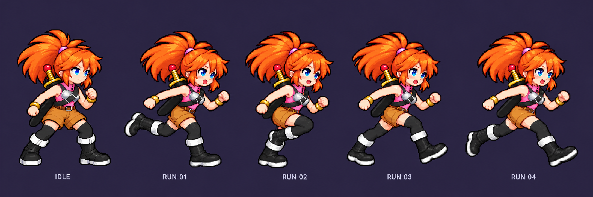
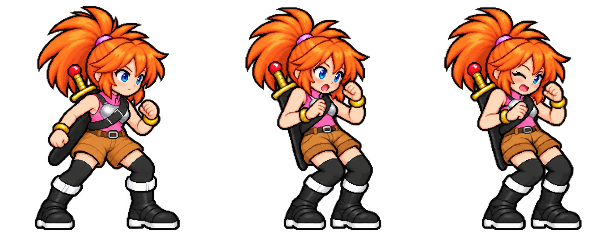

เปิด production atlas ล่าสุดที่ใช้ในเกม
ดูท่าแพ้ใหม่ — เทียบขนาดหัวกับ Idle
Aclaire — key pose ชุดปรับปรุง
แถวบน: Idle ใหม่ / ชักดาบจากหลัง / Attack 1 / Attack 2 / Attack 3 / Cast
แถวล่าง: ตัวเทียบ — Idle / Run / Jump จากเกม และ Hurt ที่ปรับใหม่
ภาพใหม่ใช้สเกลเดียวกันทั้งชุด ไม่ยืดแต่ละท่าให้สูงเท่ากัน เส้นสีเขียวคือแนวฝ่าเท้า
เทียบพร้อมกัน: Idle ค้างด้านซ้าย / Run ล่าสุดวน 4 เฟรมตรงกลาง / ชุดท่าด้านขวา — กดหยุดภาพเพื่อเทียบความสูง
นี่เป็น key pose review ยังไม่ใช่ animation ครบเฟรม ชุดนี้ยังต้องเก็บขอบพิกเซลและแมปเข้าชุดสี V4 ก่อนผลิต atlas ส่วนเวลา Cast ในเกมยังอยู่ที่ 250 ms
Run — ปรับขาสั้นลงและเทียบขนาดหัว ลำตัว รองเท้า กับ Idle ใหม่ วาง Idle ด้านซ้ายเพื่อเทียบโดยตรง (แถวอ้างอิงด้านบนยังเป็น atlas เดิม)

Hurt — ใช้ภาพท่าที่ 2 เดิมก่อนปรับ expression (ภาพขวาสุดด้านล่าง) ซ้ำทั้ง 2 เฟรม ไม่กระพริบหาย
